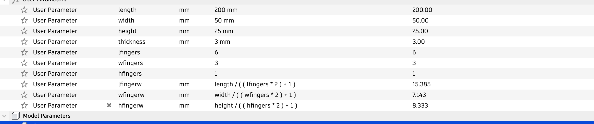
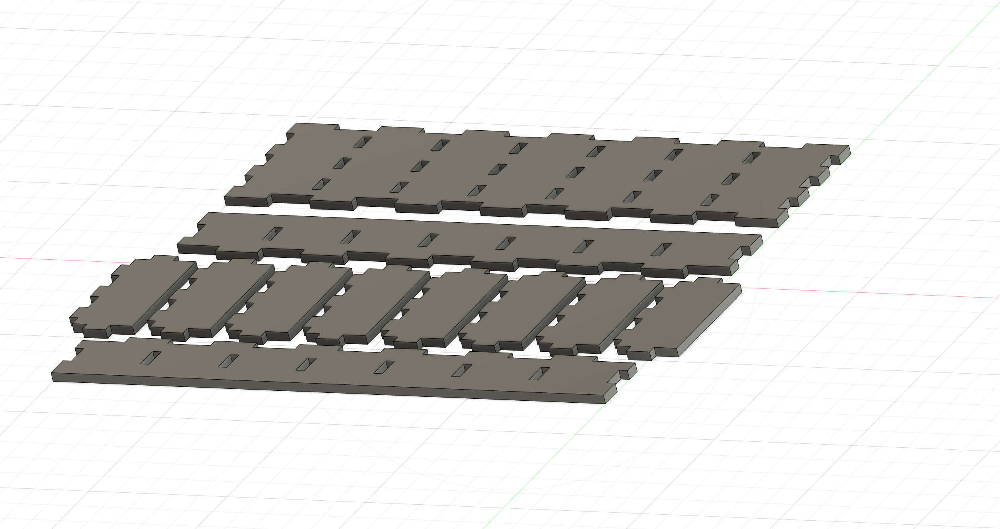
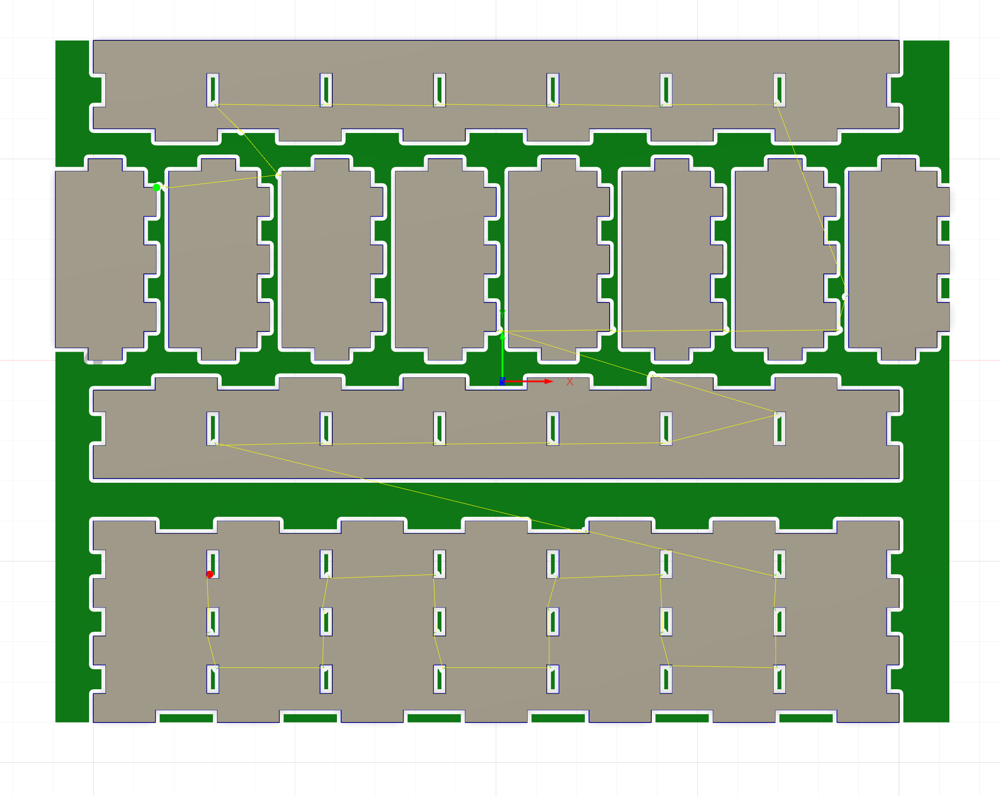

VERKEFNI 2 - Tölvustuddur skurður

HLUTI I - Nota vínylskerann til að búa til eitthvað
Lýsingin á þessum hluta verkefnisins var einstaklega einföld of bauð upp á mikið frelsi í framkvæmd: Notaðu vínylskerann til að búa til eitthvað. 100x50cm skurðarflötur max.
Ég ákvað að búa til límmiða á tölvuna mína líkt og margir samnemendur mínir en Vélalímmiðinn var það eina sem var á tölvunni minni, því miður þykir mér Vélalogoið ekkert sérstaklega fallegt svo hann fékk að fjúka fyrir 3 nýjum límmiðum sem voru þó samtals innan 100x50cm skurðflatar líkt og kom fram í verkefnalýsingu.
Innblástur og hugmyndavinna
Fyrst á dagskrá var hugmyndavinnan sem tók sennilega mestan tíma í hluta 1 þar sem ég gat bara ekki ákveðið hvað ætti að fara á tölvuna. Ég reyndi að finna eitthvað sem skipti mig máli en það var erfiðara en ég hélt. Ég ákvað því á endanum að gera eitthvað úr þeirri tónlist sem ég hafði verið að hlusta á upp á síðkastið og endaði á að velja Kanye West og Pink Floyd. Ég sótti Wish You Were Here album coverið af Pinterest og svo sótti ég Bangsann af Graduation plötunni frá Kanye líka af Pinterest. Að lokum tók ég svo Batman mynd þar sem ég er pick-me gæjinn sem heldur að hann viti allt um Batman, en hana sótti ég af FreePatternsArea.
Framkvæmd
Ég tók myndirnar 3 og færði inn í Inkscape og notaði þar Trace bitmap (smelltu til að læra) til þess að Vectorizera myndirnar . Útkoman leit svona út eftir að myndirnar voru sameinaðar í eitt skjal og línurnar voru minnkaðar í 0,02 mm fyrir vínylskerann. Hægt er að sækja þessa mynd til að prenta út en hún er á png formati.

Þegar þetta ar klárt var komið að því að setja efni í vínylskerann og græja límmiðana. Ég valdi svart efni í vínylskerann og fékk hjálp kennara við að setja hann af stað. Útkoman var mjög góð og gekk skurðurinn hnökralaust. Þá var næst á dagskrá að koma límmiðanum yfir á tölvuna en það var gert með því að taka efnið af sem var utan um línurnar og taka svo einn límmiða í einu með málningarteipi, sem gerði ferlið töluvert auðveldara.


Linkur á hönnunarskjöl
Hópverkefni - Kerf test
Lýsingin á þessum hluta verkefnisins var: Veljið geislaskera og ákvarðið með prófunum kerf fyrir þann skera. Skjalfestið á ykkar persónulegu vefsíður. Nemendur mega vinna saman 3 í hóp.
Aðferðin sem við notuðum til að finna kerf skerans í VR-III var að skera út 10 ferninga í röð á akrílplötu. Eftir að skorið hefði verið í efnið myndaðist bil eftir skerann sem var mælt og svo deilt niður á línurnar 11 í skurðinum. Prófunin gaf til kynna að Kerf væri um það bil 0,15 mm.


Hluti II - Parametrískt, geirnelgt módel
Lýsingin á þessum hluta verkefnisins var eftirfarandi: Hannaðu parametrískt, geirneglt (pressfit) módel af byggingareiningum. Módelið þarf að vera skalanlegt á mismunandi máta (efnisþykkt, hæðir og breiddir sem nemandi velur), útfært með góðum parametríum í hugbúnaði að eigin vali. Mælt er með Autodesk Fusion 360 ef nemandi vill fá aðstoð kennara, en hafi nemandi tök á því að nota annan CAD hugbúnað þá er það í góðu lagi. Hönnunin þarf að innihalda amk 3 geirnegldar festi punkta. Auka stig fyrir mismunandi gerðir af festingum.
Læra
Fyrsta mál á dagskrá var að læra á parametra og pressfit model í Autodesk Fusion, þá var horft á þetta myndband. Myndbandið hjálpaði virkilega mikið og virkuðu þær festingar ágætlega fyrir það verkefni sem ég hafði hugsað mér.
Hugmyndavinna og innblástur
Mig langaði að búa til eitthvað sem kæmi sér vel í mínu daglega lífi. Ég leitaði lengi af hugmyndum á netinu en fann ekkert sem mér fannst sérstaklega nothæft fyrir minn hversdagsleika. Loks ákvað ég bara að fá innblástur úr íbúðinni minn en sá að ég var með fullt af vítamín dunkum sem tóku mikið pláss af þessum 40m^2 sem ég bý í. Þá var tilvalið að búa til vítamínbox sem ég gæti sett í einu sinni í viku fyrir 7 daga vikunnar. Þá var komið að því að hanna boxið
Hönnun
Ég ákvað að hönnunin skyldi ekki vera alltof flókin til að minnka áhættuna á að pressfit-ið myndi klúðrast. Líkt og kom fram hér áðan nýtti ég þær festingar sem sýndar voru í myndbandinu ofar en bætti einnig við götum svo hægt væri að hafa hólf í boxinu.
Ég passaði að skilgreina parametra vel í byrjun, eins og kennt var í myndbandinu. Sú ákvörðun kom sér vel þar sem ég ákvað að breyta úr 4mm thickness í 3mm fyrir akríl í lokin. Það hefði verið mikið vesen ef ég hefði ekki verið búin að skilgreina thickness í byrjun svo ég mæli eindregið með því að nota parametra
Hér er hægt að sjá hvernig þetta á að líta út og hér fyrir neðan er svo hægt að sjá hvernig hver og einn partur á að vera, líka festingarnar. Festingarnar er einfaldar eins og sjá má en gerð voru göt fyrir hólfin í hliðarnar.

Undirbúningur fyrir Skurð
Þá var komið að því að skera út bitana, til þess notaði ég þetta myndband frá Fab Lab Akureyri sem sýnir ferlið hvernig maður kemur hönnun í Fusion yfir í Inkscape svo hægt sé að skera út. Hér fyrir neðan sést hvernig simulation kom út fyrir skurðinn í Fusion en á tímapunkt virtist þetta bara ekki ætla að virka hjá mér. Sama hvað ég reyndi gat ég bara ekki fengið simulationið til að virka. Það á að líta út eins og á myndinni hér fyrir neðan en það var eins og Fusion skildi ekki hvernig hún ætti að skera út þennan einfalda hlut. Þökk sé Hafliða komst ég að því að ég hafði sett Kerf lasersins í vitlausann dálk, passið að gera það ekki! Hér fyrir neðan má einnig sjá hvernig stillingarnar eiga að vera en ég hafði skipt á gildum og sett kerf width sem 2 mm og Nozzle diameter sem 0,17 mm
Skurður
Nú átti bara eftir að laserskera svo Inkscape skráin var send á tölvuna, dxf format virkaði ekki hjá mér svo ég sendi fileið bara gegnum mail á vector formi. Fyrst var allt modelið í heild prentað en það voru mistök þar sem ekki var hægt að setja hólfin ofan í götin, pressfitið á hliðunum virkaði en ekki götin. Lausnin á því fékkst með því að prenta botninn og hliðarnar aftur en breyta þá thickness úr 3 mm í 3,1 mm til þess að meira svigrúm væri fyrir pressfit götin. Það virkaði svona ljómandi vel og var útkoman svona.
Hér er svo hægt að sjá hvernig þetta leit út í nærmynd, hefði mögulega viljað gera þetta í aðeins meira neutral lit en það er eins og það er.
Linkur á hönnunarskjöl
HLUTI III - Vinnutímar
| Nr. | Lýsing | Klukkutímar |
|---|---|---|
| 1 | Læra á tæki og forrit (Myndbönd og í persónu) | 1,5 |
| 2 | Hönnun á boxinu, festingar og hlutir í fusion | 1,5 |
| 3 | Hugmyndavinna (Ákvörðun á límmiðum og pressfit) | 3 |
| 4 | Önnur vinna í Inkscape og leysa vandamál | 2 |
| 5 | Framkvæmd á límmiðum og pressfit | 1 |
| 6 | Heimasíða | 1,5 |
| 7 | Kerf test | 2 |
| 12,5 klst | ||
Netfangið mitt
smh40@hi.isSímanúmer
+354 897-1637Heimilisfang
Holtagerði 8Húsavík, 640
Ísland